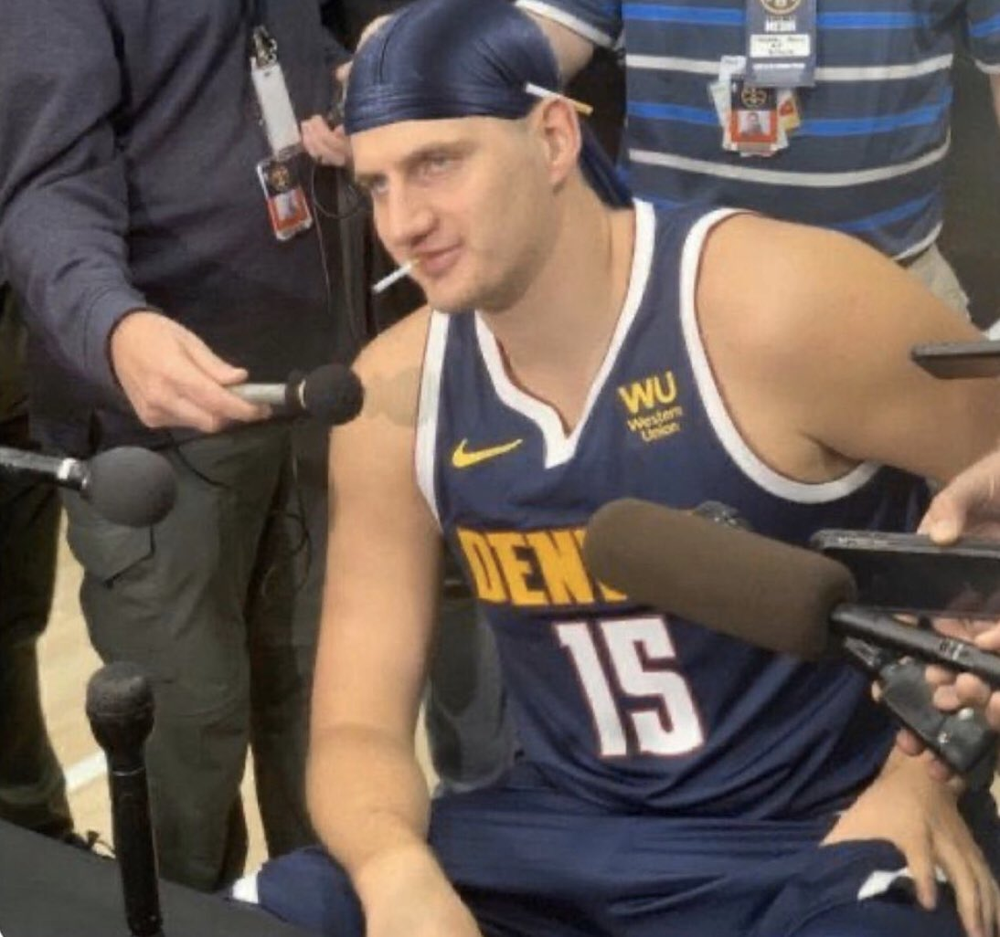

Auf dieser Seite stellen wir Jokic vor: Nikola Jokić (Никола Јокић), geboren am 19. Februar 1995 in Sombor, BR Jugoslawien, ist ein serbischer Basketballspieler, der seit 2015 bei den Denver Nuggets in der NBA unter Vertrag steht. Jokić ist ein achtfacher NBA All-Star und wurde achtmal in ein All-NBA Team gewählt. Er war der MVP der Saisons 2020/21 und 2021/22 sowie 2023/24. Zudem wurde er zum MVP der Finalserie 2022/23 gewählt. Der 2014 an erst 41. Stelle gedraftete Jokić gilt als einer der größten „Draft-Steals“ der NBA-Geschichte.